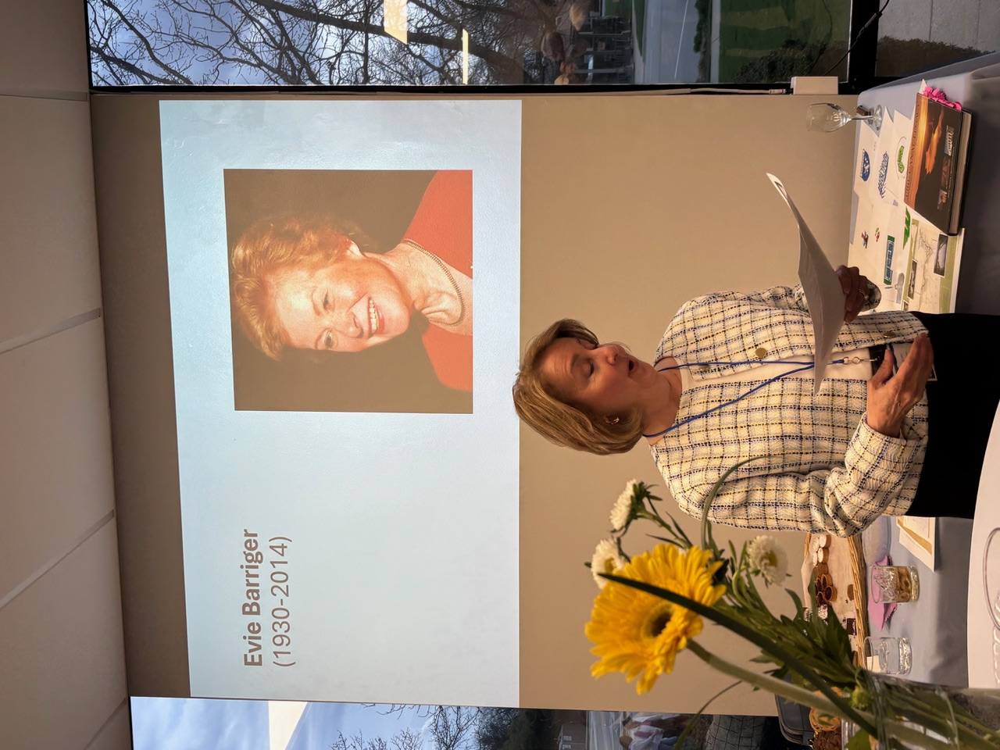
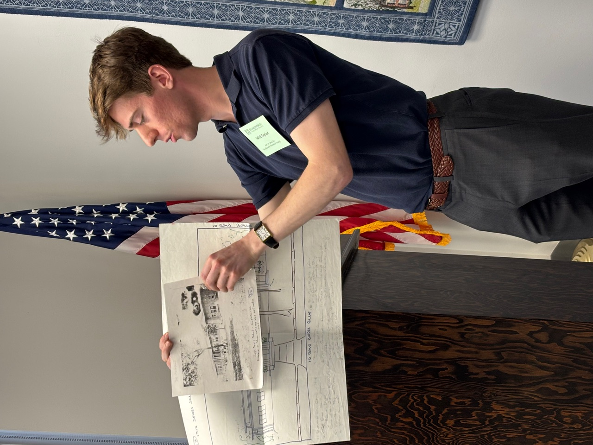
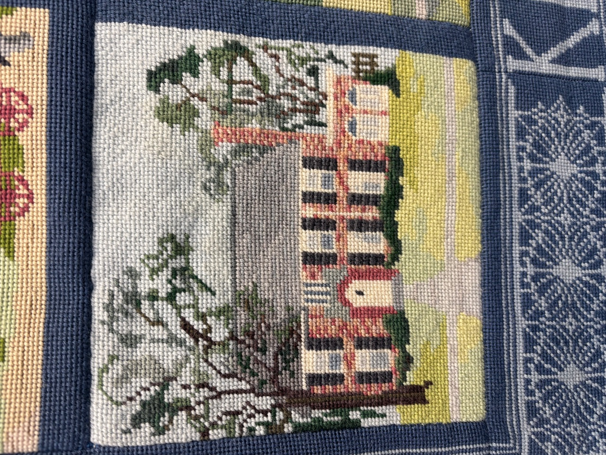
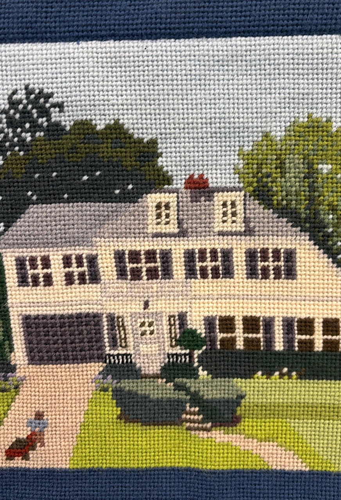
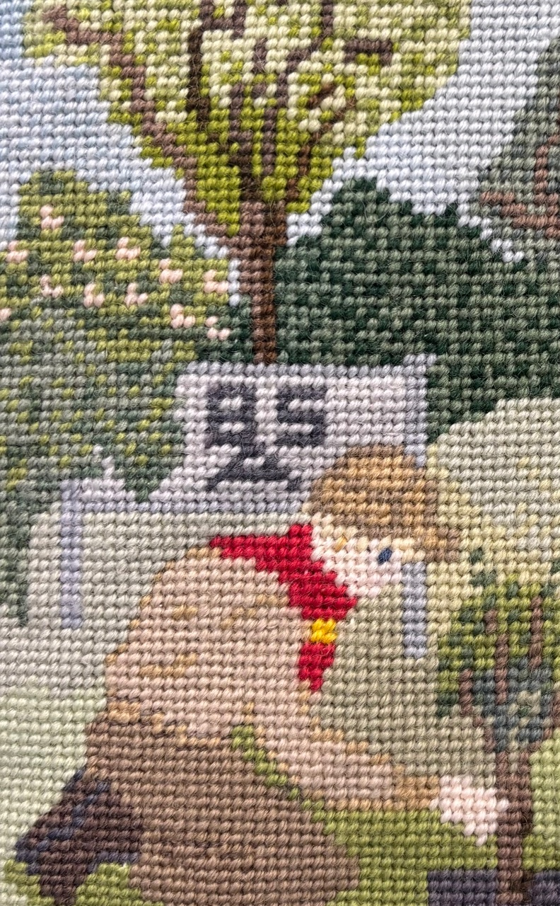
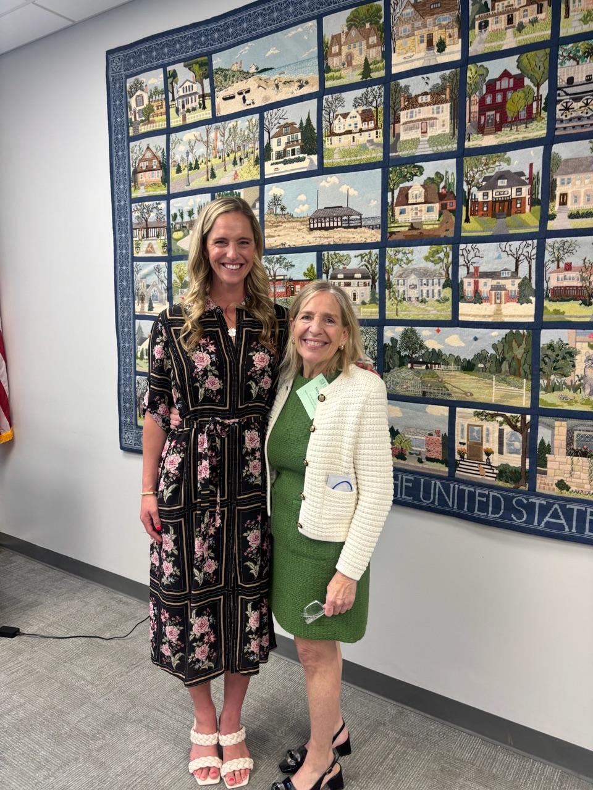
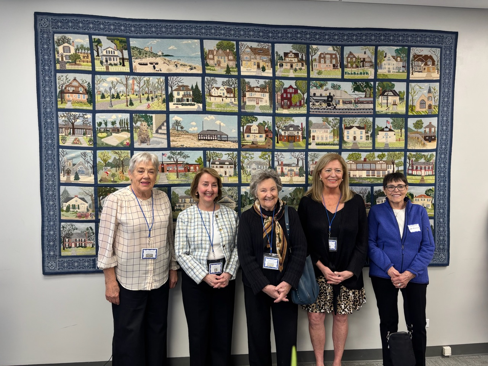
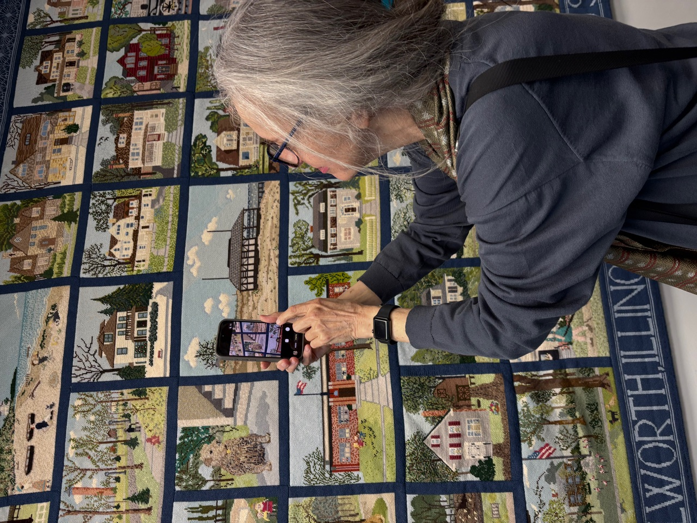
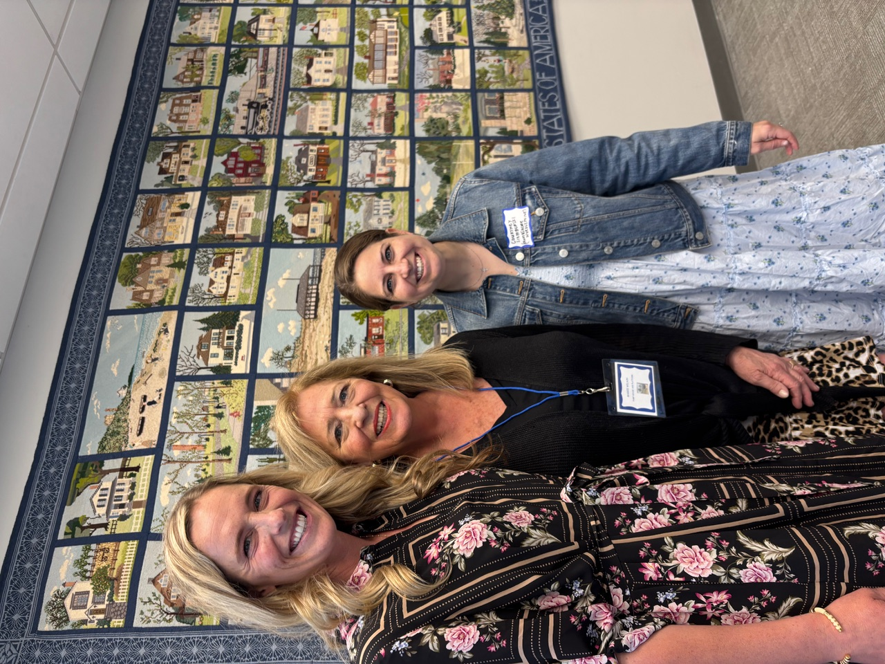

Stitching a Community Together: The Story Behind Kenilworth’s Centennial Needlepoint

In 1996, as Kenilworth celebrated its centennial, a group of residents set out to commemorate the milestone in a way that was both artistic and deeply personal. Under the leadership of longtime resident and accomplished needlepoint artist Evie Barriger, they created an extraordinary piece: a large-scale needlepoint depicting many of the village’s most iconic sites, including its historic homes.


The result is a work that is as intricate as it is meaningful—capturing not only the architectural beauty of the community, but also a shared sense of identity and history. Today, the piece resides in the boardroom of the Stuart Memorial Building, where it remains one of the village’s most unique yet often overlooked treasures.


On April 12, the Kenilworth Historical Society welcomed residents and guests for a special reception celebrating and rediscovering the Centennial Needlepoint. Attendees had the opportunity to view the piece up close, learn about its origins, and identify the homes and landmarks woven into its design.
We were especially fortunate to have several of the original needlepointers in attendance, including Maggie Wilson, Gwen Yant, Kathleen Hull, Tyor, Caroline Narhwald, Charlotte Hayes, and Caroline Reppening. Their presence brought the story of the Centennial Needlepoint to life, offering a meaningful connection between the artistry of the piece and the women who so thoughtfully created it. The evening featured complimentary appetizers and beverages, creating a warm, communal atmosphere that reflected the spirit of the work itself.


Adding a contemporary perspective to the event, needlepoint artist Ellen Castellini spoke about the craft’s enduring relevance and recent resurgence. Her own journey with needlepoint began simply. “A few years ago, at the suggestion of a friend, I picked up a canvas and thread—and it truly changed my life,” she shared.

What began as a quiet reprieve during the busy years of motherhood soon became something much more significant. The focused, rhythmic act of stitching offered both creative fulfillment and mental clarity. “The analytical part of my brain, which had felt both exhausted and a bit untapped, was suddenly reawakened,” she explained.
While needlepoint has seen renewed popularity, Castellini emphasized that its appeal extends far beyond fleeting trends. With roots tracing back to ancient civilizations—examples have been discovered in pharaohs’ tombs—the craft has endured for centuries. Historical figures such as Marie Antoinette, Mary, Queen of Scots, Queen Elizabeth, Princess Grace, and Martha Washington all found solace and expression in its quiet, deliberate process.

What makes the Kenilworth Centennial Needlepoint particularly special, Castellini noted, is that it reflects not only this long-standing tradition of craftsmanship, but also a profound sense of community. “This artwork was not created in isolation,” she said. “It was made by women here in Kenilworth who came together to document the places and homes that mattered most to them. It tells a story—not just of buildings, but of a moment in time, and of the people who lived it.”

That idea—that needlepoint can preserve memory and connection—continues to resonate today. In Castellini’s own work, she sees people drawn not only to the beauty of the craft, but to what it offers in a modern world: a chance to slow down, to create something by hand, and to connect with others in a meaningful way. “Many of the classes and gatherings I host feel less like lessons,” she said, “and more like a return to something we didn’t realize we were missing.”

While today’s renewed interest in needlepoint may ebb, its deeper value endures. It remains a practice that people return to throughout their lives—a way to create, to connect, and to mark moments that matter.
In that sense, the Kenilworth Centennial Needlepoint is more than a work of art. It is a lasting testament to shared creativity and community spirit—proof that what is made by hand, and made together, can endure far beyond its time.
Located just about 30 minutes from the city, the Kenilworth Historical Society is a welcoming destination for visitors to experience not only this magnificent needlepoint, but also to learn more about the rich and distinctive history of Kenilworth. Guests are encouraged to call the Society to schedule a private tour or to inquire about current exhibit hours.